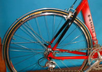
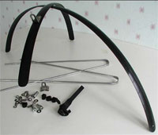
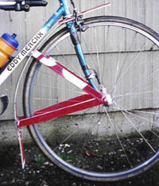
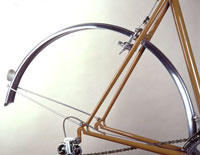
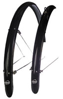
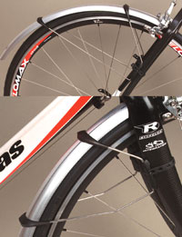
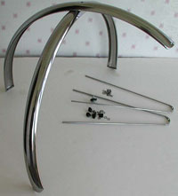
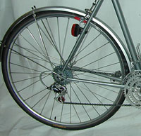
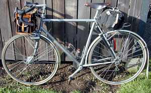
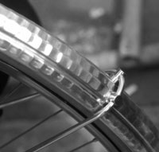

MUDGUARDS
|  |
|  |
|  |
|  |
|  |
|  |
|  |
|  |
|  |
While most randonneuring clubs don't require fenders and the requirement was dropped from PBP, there are still clubs like SIR, in our generally wet environment where they are highly recommended and a must if you wish to have randonneuring friends. Some riders do not use them because of weight issues, but there are fenders that weigh very little. Brevets are not races, so staying drier and keeping your fellow riders happy are more important! Buy them or make your own, it's easy insurance for a trouble-free rainy day.
There are numerous reasons for using fenders in a brevet:
- Keeping you drier and cleaner from road debris and water
- Keeping your bike cleaner from road grit
- As a courtesy to riders around you, especially in a paceline
- Some brevets require them
There are many fenders on the market, from very stylish hammered aluminum, carbon fiber and practically free homemade versions. Here is a list of currently available fenders for 26" and 700c wheels (smaller sizes are often available from recumbent shops):
- SKS (formerly Esge) P35, P45 poly fenders $32-40/pair (available at most LBSs)
- SKS RaceBlade Road poly fenders $50/pair (available at most LBSs)
- Gilles Berthoud carbon fiber fenders $162/pair (available at Wallingford Bike)
- Gilles Berthoud stainless steel fenders $60/pair (available at Wallingford Bike)
- Honjo hammered and smooth metal fenders $90/pair (available at Jitensha Studio and some local shops)
- Zefal round profile plastic fenders $25/pair (available at most LBSs)
- Planet Bike plastic fenders $30-35/pair (available at most LBSs)
- Salmon Profil narrow aluminum $40+/pair (available from Cycles D. Salmon)
- Bluemmels, no longer made, but nice colors!
- Homemade Coroplast fenders (created by Kent Peterson)
- Clip-on fenders are worthless
Mounting. Attaching fenders is different for every bike. Tire width and profile, fork and stay clearance, normal or short reach brakes, eyelets (or lack thereof), and material all affect attachment, but with some basic tools and creativity, fenders can be mounted to most frames. Here are some useful items for mounting:
- Blackburn vinyl-coated stay clamps
- Blackburn bolt buttons (fit in the space where the seat stay and chainstay join at the rear dropout)
- Zipties
- Allen bolt or button heads with washers
 Most fenders are customized and attached by individuals but according to Jan Heine, Il Vecchio in Seattle specializes in mounting fenders to almost any bike. Other competent shops may also have someone who can help.
Jitensha Studio has a page on mounting Honjo fenders. The recent issue of Vintage Bicycle Quarterly Vol. 1 No. 2 (Winter 2002) also has a good article on mounting metal fenders.
If your brakes just don't have enough clearance to run fenders under them, you might take a look at the ReachAround kit available through River City Cycles (they also build beautiful wood fenders). Here's some images of the ReachAround installed on several bikes.
Mudflaps. Most often, an extension on the rear edge of a fender, about 2 inches from the ground, will make your fenders more functional and pleasant for those riding behind you. You can also add one to the front fender, as that will keep more road spray and water from hitting your shoes. Materials for these can be made from rubber, old waterbottles cut in half or cut up plastic cat litter containers. They can be mounted with zipties, riv nuts or short bolts and nuts.